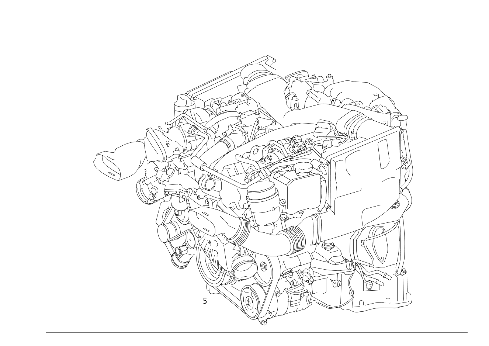

| № | Артикул | Название | Кол. | Примечание | Ограничение |
|---|---|---|---|---|---|
| 5 | A 642 010 99 11 | Дизельный двигатель (DIESEL ENGINE) | 1 | ||
| 5 | A 642 010 99 08 | Дизельный двигатель (DIESEL ENGINE) | 1 | ||
| 5 | A 642 010 99 06 | Дизельный двигатель (DIESEL ENGINE) | 1 | ||
| 5 | A 642 010 99 01 | Дизельный двигатель (DIESEL ENGINE) | 1 | ||
| 5 | A 642 010 98 08 | Дизельный двигатель (DIESEL ENGINE) | 1 | ||
| 5 | A 642 010 98 06 | Дизельный двигатель (DIESEL ENGINE) | 1 | ||
| 5 | A 642 010 98 01 | Дизельный двигатель (DIESEL ENGINE) | 1 | ||
| 5 | A 642 010 97 12 | Дизельный двигатель (DIESEL ENGINE) | 1 | ||
| 5 | A 642 010 97 08 | Дизельный двигатель (DIESEL ENGINE) | 1 | ||
| 5 | A 642 010 97 06 | Дизельный двигатель (DIESEL ENGINE) | 1 | ||
| 5 | A 642 010 97 01 | Дизельный двигатель (DIESEL ENGINE) | 1 | ||
| 5 | A 642 010 96 11 | Дизельный двигатель (DIESEL ENGINE) | 1 | ||
| 5 | A 642 010 96 06 | Дизельный двигатель (DIESEL ENGINE) | 1 | ||
| 5 | A 642 010 96 01 | Дизельный двигатель (DIESEL ENGINE) | 1 | ||
| 5 | A 642 010 95 11 | Дизельный двигатель (DIESEL ENGINE) | 1 | ||
| 5 | A 642 010 95 08 | Дизельный двигатель (DIESEL ENGINE) | 1 | ||
| 5 | A 642 010 95 06 | Дизельный двигатель (DIESEL ENGINE) | 1 | ||
| 5 | A 642 010 95 01 | Дизельный двигатель (DIESEL ENGINE) | 1 | ||
| 5 | A 642 010 94 08 | Дизельный двигатель (DIESEL ENGINE) | 1 | ||
| 5 | A 642 010 94 06 | Дизельный двигатель (DIESEL ENGINE) | 1 | ||
| 5 | A 642 010 94 01 | Дизельный двигатель (DIESEL ENGINE) | 1 | ||
| 5 | A 642 010 93 97 | Дизельный двигатель | 1 | ||
| 5 | A 642 010 93 11 | Дизельный двигатель (DIESEL ENGINE) | 1 | ||
| 5 | A 642 010 93 09 | Дизельный двигатель | 1 | [402] БОЛЬШЕ НЕ ПОСТАВЛЯЕТСЯ | |
| 5 | A 642 010 93 06 | Дизельный двигатель (DIESEL ENGINE) | 1 | ||
| 5 | A 642 010 93 01 | Дизельный двигатель (DIESEL ENGINE) | 1 | ||
| 5 | A 642 010 92 97 | Дизельный двигатель | 1 | ||
| 5 | A 642 010 92 09 | Дизельный двигатель | 1 | [402] БОЛЬШЕ НЕ ПОСТАВЛЯЕТСЯ | |
| 5 | A 642 010 92 07 | Дизельный двигатель (DIESEL ENGINE) | 1 | [402] БОЛЬШЕ НЕ ПОСТАВЛЯЕТСЯ | |
| 5 | A 642 010 92 06 | Дизельный двигатель (DIESEL ENGINE) | 1 | ||
| 5 | A 642 010 92 01 | Дизельный двигатель (DIESEL ENGINE) | 1 | ||
| 5 | A 642 010 91 11 | Дизельный двигатель (DIESEL ENGINE) | 1 | ||
| 5 | A 642 010 91 09 | Дизельный двигатель | 1 | [402] БОЛЬШЕ НЕ ПОСТАВЛЯЕТСЯ | |
| 5 | A 642 010 91 07 | Дизельный двигатель | 1 | [402] БОЛЬШЕ НЕ ПОСТАВЛЯЕТСЯ | |
| 5 | A 642 010 91 06 | Дизельный двигатель (DIESEL ENGINE) | 1 | ||
| 5 | A 642 010 90 09 | Дизельный двигатель | 1 | [402] БОЛЬШЕ НЕ ПОСТАВЛЯЕТСЯ | |
| 5 | A 642 010 90 07 | Дизельный двигатель (DIESEL ENGINE) | 1 | ||
| 5 | A 642 010 90 06 | Дизельный двигатель (DIESEL ENGINE) | 1 | ||
| 5 | A 642 010 89 11 | Дизельный двигатель (DIESEL ENGINE) | 1 | ||
| 5 | A 642 010 89 07 | Дизельный двигатель (DIESEL ENGINE) | 1 | ||
| 5 | A 642 010 89 06 | Дизельный двигатель (DIESEL ENGINE) | 1 | ||
| 5 | A 642 010 88 07 | Дизельный двигатель (DIESEL ENGINE) | 1 | ||
| 5 | A 642 010 88 06 | Дизельный двигатель (DIESEL ENGINE) | 1 | ||
| 5 | A 642 010 87 11 | Дизельный двигатель (DIESEL ENGINE) | 1 | ||
| 5 | A 642 010 87 07 | Дизельный двигатель (DIESEL ENGINE) | 1 | ||
| 5 | A 642 010 85 46 | Дизельный двигатель (DIESEL ENGINE) | 1 | ||
| 5 | A 642 010 85 11 | Дизельный двигатель (DIESEL ENGINE) | 1 | ||
| 5 | A 642 010 83 11 | Дизельный двигатель (DIESEL ENGINE) | 1 | ||
| 5 | A 642 010 81 11 | Дизельный двигатель (DIESEL ENGINE) | 1 | ||
| 5 | A 642 010 81 06 | Дизельный двигатель | 1 | [402] БОЛЬШЕ НЕ ПОСТАВЛЯЕТСЯ | |
| 5 | A 642 010 80 06 | Дизельный двигатель | 1 | [402] БОЛЬШЕ НЕ ПОСТАВЛЯЕТСЯ | |
| 5 | A 642 010 79 11 | Дизельный двигатель (DIESEL ENGINE) | 1 | ||
| 5 | A 642 010 79 06 | Дизельный двигатель | 1 | ||
| 5 | A 642 010 78 48 | Дизельный двигатель (DIESEL ENGINE) | 1 | ||
| 5 | A 642 010 78 06 | Дизельный двигатель (DIESEL ENGINE) | 1 | ||
| 5 | A 642 010 77 07 | Дизельный двигатель (DIESEL ENGINE) | 1 | ||
| 5 | A 642 010 76 43 | Дизельный двигатель (DIESEL ENGINE) | 1 | ||
| 5 | A 642 010 76 07 | Дизельный двигатель | 1 | ||
| 5 | A 642 010 75 43 | Дизельный двигатель (DIESEL ENGINE) | 1 | ||
| 5 | A 642 010 75 07 | Дизельный двигатель (DIESEL ENGINE) | 1 | ||
| 5 | A 642 010 74 07 | Дизельный двигатель (DIESEL ENGINE) | 1 | ||
| 5 | A 642 010 74 04 | Дизельный двигатель (DIESEL ENGINE) | 1 | ||
| 5 | A 642 010 73 43 | Дизельный двигатель (DIESEL ENGINE) | 1 | ||
| 5 | A 642 010 73 07 | Дизельный двигатель | 1 | ||
| 5 | A 642 010 73 06 | Дизельный двигатель | 1 | ||
| 5 | A 642 010 72 43 | Дизельный двигатель (DIESEL ENGINE) | 1 | ||
| 5 | A 642 010 72 07 | Дизельный двигатель (DIESEL ENGINE) | 1 | [402] БОЛЬШЕ НЕ ПОСТАВЛЯЕТСЯ | |
| 5 | A 642 010 72 01 | Дизельный двигатель | 1 | ||
| 5 | A 642 010 71 43 | Дизельный двигатель (DIESEL ENGINE) | 1 | ||
| 5 | A 642 010 71 07 | Дизельный двигатель (DIESEL ENGINE) | 1 | ||
| 5 | A 642 010 71 06 | Дизельный двигатель (DIESEL ENGINE) | 1 | [402] БОЛЬШЕ НЕ ПОСТАВЛЯЕТСЯ | |
| 5 | A 642 010 71 01 | Дизельный двигатель (DIESEL ENGINE) | 1 | ||
| 5 | A 642 010 70 43 | Дизельный двигатель (DIESEL ENGINE) | 1 | ||
| 5 | A 642 010 70 06 | Дизельный двигатель (DIESEL ENGINE) | 1 | ||
| 5 | A 642 010 70 01 | Дизельный двигатель (DIESEL ENGINE) | 1 | ||
| 5 | A 642 010 69 43 | Дизельный двигатель (DIESEL ENGINE) | 1 | ||
| 5 | A 642 010 69 06 | Дизельный двигатель (DIESEL ENGINE) | 1 | ||
| 5 | A 642 010 69 01 | Дизельный двигатель | 1 | ||
| 5 | A 642 010 68 43 | Дизельный двигатель (DIESEL ENGINE) | 1 | ||
| 5 | A 642 010 68 06 | Дизельный двигатель | 1 | ||
| 5 | A 642 010 68 01 | Дизельный двигатель | 1 | ||
| 5 | A 642 010 67 48 | Дизельный двигатель (DIESEL ENGINE) | 1 | ||
| 5 | A 642 010 67 43 | Дизельный двигатель (DIESEL ENGINE) | 1 | ||
| 5 | A 642 010 67 01 | Дизельный двигатель | 1 | ||
| 5 | A 642 010 66 48 | Дизельный двигатель (DIESEL ENGINE) | 1 | [402] БОЛЬШЕ НЕ ПОСТАВЛЯЕТСЯ | |
| 5 | A 642 010 66 43 | Дизельный двигатель (DIESEL ENGINE) | 1 | ||
| 5 | A 642 010 65 48 | Дизельный двигатель (DIESEL ENGINE) | 1 | [402] БОЛЬШЕ НЕ ПОСТАВЛЯЕТСЯ | |
| 5 | A 642 010 64 47 | Дизельный двигатель | 1 | ||
| 5 | A 642 010 64 01 | Дизельный двигатель (DIESEL ENGINE) | 1 | ||
| 5 | A 642 010 63 97 | Дизельный двигатель | 1 | ||
| 5 | A 642 010 63 47 | Дизельный двигатель (DIESEL ENGINE) | 1 | ||
| 5 | A 642 010 63 06 | Дизельный двигатель | 1 | ||
| 5 | A 642 010 63 01 | Дизельный двигатель (DIESEL ENGINE) | 1 | ||
| 5 | A 642 010 62 47 | Дизельный двигатель (DIESEL ENGINE) | 1 | ||
| 5 | A 642 010 62 06 | Дизельный двигатель | 1 | ||
| 5 | A 642 010 61 97 | Дизельный двигатель | 1 | ||
| 5 | A 642 010 61 15 | Дизельный двигатель (DIESEL ENGINE) | 1 | ||
| 5 | A 642 010 61 06 | Дизельный двигатель | 1 | ||
| 5 | A 642 010 60 43 | Дизельный двигатель (DIESEL ENGINE) | 1 | ||
| 5 | A 642 010 60 15 | Дизельный двигатель (DIESEL ENGINE) | 1 | ||
| 5 | A 642 010 60 01 | Дизельный двигатель (DIESEL ENGINE) | 1 | ||
| 5 | A 642 010 59 07 | Дизельный двигатель (DIESEL ENGINE) | 1 | ||
| 5 | A 642 010 59 01 | Дизельный двигатель (DIESEL ENGINE) | 1 | ||
| 5 | A 642 010 58 07 | Дизельный двигатель (DIESEL ENGINE) | 1 | ||
| 5 | A 642 010 58 01 | Дизельный двигатель (DIESEL ENGINE) | 1 | ||
| 5 | A 642 010 57 48 | Дизельный двигатель | 1 | ||
| 5 | A 642 010 57 01 | Дизельный двигатель (DIESEL ENGINE) | 1 | ||
| 5 | A 642 010 56 12 | Дизельный двигатель (DIESEL ENGINE) | 1 | ||
| 5 | A 642 010 56 04 | Дизельный двигатель (DIESEL ENGINE) | 1 | ||
| 5 | A 642 010 55 12 | Дизельный двигатель (DIESEL ENGINE) | 1 | ||
| 5 | A 642 010 55 04 | Дизельный двигатель (DIESEL ENGINE) | 1 | ||
| 5 | A 642 010 54 47 | Дизельный двигатель | 1 | ||
| 5 | A 642 010 54 12 | Дизельный двигатель (DIESEL ENGINE) | 1 | ||
| 5 | A 642 010 54 06 | Дизельный двигатель | 1 | [402] БОЛЬШЕ НЕ ПОСТАВЛЯЕТСЯ | |
| 5 | A 642 010 54 04 | Дизельный двигатель | 1 | ||
| 5 | A 642 010 53 06 | Дизельный двигатель | 1 | [402] БОЛЬШЕ НЕ ПОСТАВЛЯЕТСЯ | |
| 5 | A 642 010 52 43 | Дизельный двигатель (DIESEL ENGINE) | 1 | ||
| 5 | A 642 010 51 43 | Дизельный двигатель (DIESEL ENGINE) | 1 | ||
| 5 | A 642 010 51 11 | Дизельный двигатель (DIESEL ENGINE) | 1 | ||
| 5 | A 642 010 51 04 | Дизельный двигатель (DIESEL ENGINE) | 1 | ||
| 5 | A 642 010 50 48 | Дизельный двигатель | 1 | ||
| 5 | A 642 010 50 04 | Дизельный двигатель (DIESEL ENGINE) | 1 | ||
| 5 | A 642 010 49 07 | Дизельный двигатель (DIESEL ENGINE) | 1 | ||
| 5 | A 642 010 48 48 | Дизельный двигатель | 1 | [402] БОЛЬШЕ НЕ ПОСТАВЛЯЕТСЯ | |
| 5 | A 642 010 48 09 | Дизельный двигатель | 1 | [402] БОЛЬШЕ НЕ ПОСТАВЛЯЕТСЯ | |
| 5 | A 642 010 48 07 | Дизельный двигатель (DIESEL ENGINE) | 1 | ||
| 5 | A 642 010 48 04 | Дизельный двигатель (DIESEL ENGINE) | 1 | ||
| 5 | A 642 010 47 47 | Дизельный двигатель | 1 | ||
| 5 | A 642 010 47 07 | Дизельный двигатель (DIESEL ENGINE) | 1 | ||
| 5 | A 642 010 47 04 | Дизельный двигатель | 1 | ||
| 5 | A 642 010 46 48 | Дизельный двигатель (DIESEL ENGINE) | 1 | ||
| 5 | A 642 010 46 47 | Дизельный двигатель | 1 | ||
| 5 | A 642 010 46 13 | Дизельный двигатель (DIESEL ENGINE) | 1 | [402] БОЛЬШЕ НЕ ПОСТАВЛЯЕТСЯ | |
| 5 | A 642 010 46 09 | Дизельный двигатель (DIESEL ENGINE) | 1 | ||
| 5 | A 642 010 46 07 | Дизельный двигатель (DIESEL ENGINE) | 1 | ||
| 5 | A 642 010 46 04 | Дизельный двигатель | 1 | ||
| 5 | A 642 010 46 03 | Дизельный двигатель (DIESEL ENGINE) | 1 | [402] БОЛЬШЕ НЕ ПОСТАВЛЯЕТСЯ | |
| 5 | A 642 010 45 48 | Дизельный двигатель | 1 | ||
| 5 | A 642 010 45 45 | Дизельный двигатель (DIESEL ENGINE) | 1 | ||
| 5 | A 642 010 45 09 | Дизельный двигатель (DIESEL ENGINE) | 1 | ||
| 5 | A 642 010 45 08 | Дизельный двигатель (DIESEL ENGINE) | 1 | ||
| 5 | A 642 010 45 04 | Дизельный двигатель | 1 | ||
| 5 | A 642 010 44 47 | Дизельный двигатель | 1 | ||
| 5 | A 642 010 44 44 | Дизельный двигатель | 1 | ||
| 5 | A 642 010 44 09 | Дизельный двигатель | 1 | [402] БОЛЬШЕ НЕ ПОСТАВЛЯЕТСЯ | |
| 5 | A 642 010 44 08 | Дизельный двигатель (DIESEL ENGINE) | 1 | ||
| 5 | A 642 010 43 47 | Дизельный двигатель | 1 | ||
| 5 | A 642 010 43 45 | Дизельный двигатель (DIESEL ENGINE) | 1 | ||
| 5 | A 642 010 43 44 | Дизельный двигатель (DIESEL ENGINE) | 1 | ||
| 5 | A 642 010 43 08 | Дизельный двигатель (DIESEL ENGINE) | 1 | ||
| 5 | A 642 010 42 45 | Дизельный двигатель | 1 | ||
| 5 | A 642 010 42 11 | Дизельный двигатель | 1 | ||
| 5 | A 642 010 42 09 | Дизельный двигатель (DIESEL ENGINE) | 1 | ||
| 5 | A 642 010 42 08 | Дизельный двигатель (DIESEL ENGINE) | 1 | ||
| 5 | A 642 010 41 48 | Дизельный двигатель (DIESEL ENGINE) | 1 | ||
| 5 | A 642 010 41 44 | Дизельный двигатель | 1 | ||
| 5 | A 642 010 41 11 | Дизельный двигатель | 1 | ||
| 5 | A 642 010 41 09 | Дизельный двигатель (DIESEL ENGINE) | 1 | ||
| 5 | A 642 010 41 08 | Дизельный двигатель (DIESEL ENGINE) | 1 | ||
| 5 | A 642 010 41 06 | Дизельный двигатель (DIESEL ENGINE) | 1 | ||
| 5 | A 642 010 41 03 | Дизельный двигатель (DIESEL ENGINE) | 1 | ||
| 5 | A 642 010 40 48 | Дизельный двигатель (DIESEL ENGINE) | 1 | ||
| 5 | A 642 010 40 45 | Дизельный двигатель | 1 | ||
| 5 | A 642 010 40 11 | Дизельный двигатель | 1 | [402] БОЛЬШЕ НЕ ПОСТАВЛЯЕТСЯ | |
| 5 | A 642 010 40 09 | Дизельный двигатель (DIESEL ENGINE) | 1 | ||
| 5 | A 642 010 40 08 | Дизельный двигатель (DIESEL ENGINE) | 1 | ||
| 5 | A 642 010 40 06 | Дизельный двигатель (DIESEL ENGINE) | 1 | ||
| 5 | A 642 010 40 04 | Дизельный двигатель | 1 | ||
| 5 | A 642 010 40 03 | Дизельный двигатель (DIESEL ENGINE) | 1 | ||
| 5 | A 642 010 39 48 | Дизельный двигатель (DIESEL ENGINE) | 1 | ||
| 5 | A 642 010 39 45 | Дизельный двигатель | 1 | ||
| 5 | A 642 010 39 44 | Дизельный двигатель | 1 | ||
| 5 | A 642 010 39 11 | Дизельный двигатель | 1 | [402] БОЛЬШЕ НЕ ПОСТАВЛЯЕТСЯ | |
| 5 | A 642 010 39 09 | Дизельный двигатель (DIESEL ENGINE) | 1 | ||
| 5 | A 642 010 39 06 | Дизельный двигатель (DIESEL ENGINE) | 1 | ||
| 5 | A 642 010 39 04 | Дизельный двигатель (DIESEL ENGINE) | 1 | ||
| 5 | A 642 010 39 03 | Дизельный двигатель (DIESEL ENGINE) | 1 | ||
| 5 | A 642 010 38 48 | Дизельный двигатель (DIESEL ENGINE) | 1 | ||
| 5 | A 642 010 38 13 | Дизельный двигатель (DIESEL ENGINE) | 1 | ||
| 5 | A 642 010 38 11 | Дизельный двигатель | 1 | [402] БОЛЬШЕ НЕ ПОСТАВЛЯЕТСЯ | |
| 5 | A 642 010 38 09 | Дизельный двигатель (DIESEL ENGINE) | 1 | ||
| 5 | A 642 010 38 06 | Дизельный двигатель (DIESEL ENGINE) | 1 | ||
| 5 | A 642 010 38 04 | Дизельный двигатель | 1 | ||
| 5 | A 642 010 37 98 | Дизельный двигатель | 1 | ||
| 5 | A 642 010 37 48 | Дизельный двигатель (DIESEL ENGINE) | 1 | ||
| 5 | A 642 010 37 11 | Дизельный двигатель | 1 | [402] БОЛЬШЕ НЕ ПОСТАВЛЯЕТСЯ | |
| 5 | A 642 010 37 09 | Дизельный двигатель (DIESEL ENGINE) | 1 | ||
| 5 | A 642 010 37 06 | Дизельный двигатель (DIESEL ENGINE) | 1 | ||
| 5 | A 642 010 37 04 | Дизельный двигатель | 1 | ||
| 5 | A 642 010 37 03 | Дизельный двигатель (DIESEL ENGINE) | 1 | ||
| 5 | A 642 010 36 48 | Дизельный двигатель (DIESEL ENGINE) | 1 | ||
| 5 | A 642 010 36 46 | Дизельный двигатель | 1 | ||
| 5 | A 642 010 36 45 | Дизельный двигатель | 1 | ||
| 5 | A 642 010 36 11 | Дизельный двигатель | 1 | ||
| 5 | A 642 010 36 10 | Дизельный двигатель (DIESEL ENGINE) | 1 | ||
| 5 | A 642 010 36 09 | Дизельный двигатель (DIESEL ENGINE) | 1 | ||
| 5 | A 642 010 36 06 | Дизельный двигатель (DIESEL ENGINE) | 1 | ||
| 5 | A 642 010 36 03 | Дизельный двигатель (DIESEL ENGINE) | 1 | ||
| 5 | A 642 010 35 48 | Дизельный двигатель (DIESEL ENGINE) | 1 | ||
| 5 | A 642 010 35 46 | Дизельный двигатель | 1 | ||
| 5 | A 642 010 35 11 | Дизельный двигатель | 1 | ||
| 5 | A 642 010 35 06 | Дизельный двигатель (DIESEL ENGINE) | 1 | ||
| 5 | A 642 010 34 48 | Дизельный двигатель (DIESEL ENGINE) | 1 | ||
| 5 | A 642 010 34 46 | Дизельный двигатель | 1 | ||
| 5 | A 642 010 34 43 | Дизельный двигатель (DIESEL ENGINE) | 1 | ||
| 5 | A 642 010 34 11 | Дизельный двигатель | 1 | [402] БОЛЬШЕ НЕ ПОСТАВЛЯЕТСЯ | |
| 5 | A 642 010 34 06 | Дизельный двигатель (DIESEL ENGINE) | 1 | ||
| 5 | A 642 010 33 48 | Дизельный двигатель (DIESEL ENGINE) | 1 | ||
| 5 | A 642 010 33 47 | Дизельный двигатель | 1 | ||
| 5 | A 642 010 33 46 | Дизельный двигатель | 1 | ||
| 5 | A 642 010 33 11 | Дизельный двигатель | 1 | ||
| 5 | A 642 010 33 06 | Дизельный двигатель (DIESEL ENGINE) | 1 | ||
| 5 | A 642 010 32 48 | Дизельный двигатель (DIESEL ENGINE) | 1 | ||
| 5 | A 642 010 32 47 | Дизельный двигатель | 1 | ||
| 5 | A 642 010 32 43 | Дизельный двигатель (DIESEL ENGINE) | 1 | ||
| 5 | A 642 010 32 12 | Дизельный двигатель (DIESEL ENGINE) | 1 | ||
| 5 | A 642 010 32 06 | Дизельный двигатель (DIESEL ENGINE) | 1 | ||
| 5 | A 642 010 31 48 | Дизельный двигатель (DIESEL ENGINE) | 1 | ||
| 5 | A 642 010 31 44 | Дизельный двигатель | 1 | ||
| 5 | A 642 010 31 43 | Дизельный двигатель (DIESEL ENGINE) | 1 | ||
| 5 | A 642 010 31 12 | Дизельный двигатель | 1 | [402] БОЛЬШЕ НЕ ПОСТАВЛЯЕТСЯ | |
| 5 | A 642 010 31 06 | Дизельный двигатель (DIESEL ENGINE) | 1 | ||
| 5 | A 642 010 30 44 | Дизельный двигатель | 1 | ||
| 5 | A 642 010 30 43 | Дизельный двигатель (DIESEL ENGINE) | 1 | ||
| 5 | A 642 010 30 12 | Дизельный двигатель (DIESEL ENGINE) | 1 | ||
| 5 | A 642 010 29 12 | Дизельный двигатель (DIESEL ENGINE) | 1 | ||
| 5 | A 642 010 28 43 | Дизельный двигатель (DIESEL ENGINE) | 1 | ||
| 5 | A 642 010 28 12 | Дизельный двигатель (DIESEL ENGINE) | 1 | ||
| 5 | A 642 010 28 09 | Дизельный двигатель (DIESEL ENGINE) | 1 | ||
| 5 | A 642 010 27 43 | Дизельный двигатель (DIESEL ENGINE) | 1 | ||
| 5 | A 642 010 27 12 | Дизельный двигатель (DIESEL ENGINE) | 1 | ||
| 5 | A 642 010 27 03 | Дизельный двигатель | 1 | ||
| 5 | A 642 010 26 43 | Дизельный двигатель (DIESEL ENGINE) | 1 | ||
| 5 | A 642 010 26 13 | Дизельный двигатель (DIESEL ENGINE) | 1 | ||
| 5 | A 642 010 26 12 | Дизельный двигатель (DIESEL ENGINE) | 1 | ||
| 5 | A 642 010 26 07 | Дизельный двигатель | 1 | ||
| 5 | A 642 010 25 46 | Дизельный двигатель (DIESEL ENGINE) | 1 | ||
| 5 | A 642 010 25 13 | Дизельный двигатель (DIESEL ENGINE) | 1 | ||
| 5 | A 642 010 25 12 | Дизельный двигатель (DIESEL ENGINE) | 1 | ||
| 5 | A 642 010 25 08 | Дизельный двигатель (DIESEL ENGINE) | 1 | ||
| 5 | A 642 010 25 07 | Дизельный двигатель (DIESEL ENGINE) | 1 | ||
| 5 | A 642 010 24 46 | Дизельный двигатель (DIESEL ENGINE) | 1 | ||
| 5 | A 642 010 24 44 | Дизельный двигатель (DIESEL ENGINE) | 1 | ||
| 5 | A 642 010 24 13 | Дизельный двигатель (DIESEL ENGINE) | 1 | ||
| 5 | A 642 010 24 12 | Дизельный двигатель | 1 | ||
| 5 | A 642 010 24 08 | Дизельный двигатель (DIESEL ENGINE) | 1 | ||
| 5 | A 642 010 24 07 | Дизельный двигатель (DIESEL ENGINE) | 1 | ||
| 5 | A 642 010 23 43 | Дизельный двигатель (DIESEL ENGINE) | 1 | ||
| 5 | A 642 010 23 13 | Дизельный двигатель (DIESEL ENGINE) | 1 | ||
| 5 | A 642 010 23 12 | Дизельный двигатель | 1 | ||
| 5 | A 642 010 23 08 | Дизельный двигатель (DIESEL ENGINE) | 1 | ||
| 5 | A 642 010 22 47 | Дизельный двигатель (DIESEL ENGINE) | 1 | ||
| 5 | A 642 010 22 43 | Дизельный двигатель (DIESEL ENGINE) | 1 | ||
| 5 | A 642 010 22 13 | Дизельный двигатель (DIESEL ENGINE) | 1 | ||
| 5 | A 642 010 22 12 | Дизельный двигатель (DIESEL ENGINE) | 1 | ||
| 5 | A 642 010 22 08 | Дизельный двигатель | 1 | ||
| 5 | A 642 010 21 47 | Дизельный двигатель (DIESEL ENGINE) | 1 | ||
| 5 | A 642 010 21 43 | Дизельный двигатель (DIESEL ENGINE) | 1 | ||
| 5 | A 642 010 21 13 | Дизельный двигатель (DIESEL ENGINE) | 1 | ||
| 5 | A 642 010 21 12 | Дизельный двигатель (DIESEL ENGINE) | 1 | ||
| 5 | A 642 010 21 08 | Дизельный двигатель (DIESEL ENGINE) | 1 | ||
| 5 | A 642 010 20 45 | Дизельный двигатель | 1 | ||
| 5 | A 642 010 20 43 | Дизельный двигатель (DIESEL ENGINE) | 1 | ||
| 5 | A 642 010 20 13 | Дизельный двигатель (DIESEL ENGINE) | 1 | ||
| 5 | A 642 010 20 12 | Дизельный двигатель (DIESEL ENGINE) | 1 | ||
| 5 | A 642 010 20 10 | Дизельный двигатель (DIESEL ENGINE) | 1 | ||
| 5 | A 642 010 20 08 | Дизельный двигатель | 1 | ||
| 5 | A 642 010 19 47 | Дизельный двигатель (DIESEL ENGINE) | 1 | ||
| 5 | A 642 010 19 45 | Дизельный двигатель | 1 | ||
| 5 | A 642 010 19 43 | Дизельный двигатель (DIESEL ENGINE) | 1 | ||
| 5 | A 642 010 19 13 | Дизельный двигатель (DIESEL ENGINE) | 1 | ||
| 5 | A 642 010 19 12 | Дизельный двигатель (DIESEL ENGINE) | 1 | ||
| 5 | A 642 010 19 10 | Дизельный двигатель | 1 | ||
| 5 | A 642 010 19 08 | Дизельный двигатель (DIESEL ENGINE) | 1 | ||
| 5 | A 642 010 18 47 | Дизельный двигатель | 1 | ||
| 5 | A 642 010 18 43 | Дизельный двигатель (DIESEL ENGINE) | 1 | ||
| 5 | A 642 010 18 11 | Дизельный двигатель (DIESEL ENGINE) | 1 | ||
| 5 | A 642 010 18 10 | Дизельный двигатель | 1 | ||
| 5 | A 642 010 18 08 | Дизельный двигатель (DIESEL ENGINE) | 1 | ||
| 5 | A 642 010 18 04 | Дизельный двигатель | 1 | ||
| 5 | A 642 010 17 12 | Дизельный двигатель (DIESEL ENGINE) | 1 | ||
| 5 | A 642 010 17 10 | Дизельный двигатель | 1 | ||
| 5 | A 642 010 17 08 | Дизельный двигатель (DIESEL ENGINE) | 1 | ||
| 5 | A 642 010 17 04 | Дизельный двигатель | 1 | ||
| 5 | A 642 010 16 12 | Дизельный двигатель (DIESEL ENGINE) | 1 | ||
| 5 | A 642 010 16 10 | Дизельный двигатель | 1 | ||
| 5 | A 642 010 16 09 | Дизельный двигатель | 1 | [402] БОЛЬШЕ НЕ ПОСТАВЛЯЕТСЯ | |
| 5 | A 642 010 16 08 | Дизельный двигатель (DIESEL ENGINE) | 1 | ||
| 5 | A 642 010 15 45 | Дизельный двигатель (DIESEL ENGINE) | 1 | ||
| 5 | A 642 010 15 12 | Дизельный двигатель (DIESEL ENGINE) | 1 | ||
| 5 | A 642 010 15 10 | Дизельный двигатель | 1 | ||
| 5 | A 642 010 15 04 | Дизельный двигатель | 1 | ||
| 5 | A 642 010 15 03 | Дизельный двигатель | 1 | ||
| 5 | A 642 010 14 45 | Дизельный двигатель | 1 | ||
| 5 | A 642 010 14 12 | Дизельный двигатель (DIESEL ENGINE) | 1 | ||
| 5 | A 642 010 14 10 | Дизельный двигатель (DIESEL ENGINE) | 1 | ||
| 5 | A 642 010 14 09 | Дизельный двигатель (DIESEL ENGINE) | 1 | ||
| 5 | A 642 010 14 04 | Дизельный двигатель | 1 | ||
| 5 | A 642 010 13 45 | Дизельный двигатель | 1 | ||
| 5 | A 642 010 13 43 | Дизельный двигатель | 1 | ||
| 5 | A 642 010 13 10 | Дизельный двигатель (DIESEL ENGINE) | 1 | ||
| 5 | A 642 010 13 09 | Дизельный двигатель (DIESEL ENGINE) | 1 | ||
| 5 | A 642 010 12 45 | Дизельный двигатель | 1 | ||
| 5 | A 642 010 12 12 | Дизельный двигатель (DIESEL ENGINE) | 1 | ||
| 5 | A 642 010 12 09 | Дизельный двигатель (DIESEL ENGINE) | 1 | ||
| 5 | A 642 010 12 04 | Дизельный двигатель (DIESEL ENGINE) | 1 | ||
| 5 | A 642 010 11 45 | Дизельный двигатель | 1 | ||
| 5 | A 642 010 11 43 | Дизельный двигатель | 1 | ||
| 5 | A 642 010 11 12 | Дизельный двигатель | 1 | ||
| 5 | A 642 010 11 09 | Дизельный двигатель (DIESEL ENGINE) | 1 | ||
| 5 | A 642 010 11 04 | Дизельный двигатель (DIESEL ENGINE) | 1 | ||
| 5 | A 642 010 10 45 | Дизельный двигатель | 1 | ||
| 5 | A 642 010 10 04 | Дизельный двигатель | 1 | ||
| 5 | A 642 010 09 45 | Дизельный двигатель | 1 | ||
| 5 | A 642 010 09 12 | Дизельный двигатель (DIESEL ENGINE) | 1 | ||
| 5 | A 642 010 08 98 | Дизельный двигатель | 1 | ||
| 5 | A 642 010 08 45 | Дизельный двигатель | 1 | ||
| 5 | A 642 010 08 12 | Дизельный двигатель (DIESEL ENGINE) | 1 | ||
| 5 | A 642 010 07 98 | Дизельный двигатель (DIESEL ENGINE) | 1 | ||
| 5 | A 642 010 07 45 | Дизельный двигатель | 1 | ||
| 5 | A 642 010 07 12 | Дизельный двигатель (DIESEL ENGINE) | 1 | ||
| 5 | A 642 010 07 10 | Дизельный двигатель | 1 | [402] БОЛЬШЕ НЕ ПОСТАВЛЯЕТСЯ | |
| 5 | A 642 010 06 98 | Дизельный двигатель (DIESEL ENGINE) | 1 | ||
| 5 | A 642 010 06 45 | Дизельный двигатель | 1 | ||
| 5 | A 642 010 06 12 | Дизельный двигатель | 1 | ||
| 5 | A 642 010 06 10 | Дизельный двигатель (DIESEL ENGINE) | 1 | ||
| 5 | A 642 010 05 12 | Дизельный двигатель (DIESEL ENGINE) | 1 | ||
| 5 | A 642 010 05 10 | Дизельный двигатель | 1 | [402] БОЛЬШЕ НЕ ПОСТАВЛЯЕТСЯ | |
| 5 | A 642 010 04 12 | Дизельный двигатель | 1 | ||
| 5 | A 642 010 04 10 | Дизельный двигатель (DIESEL ENGINE) | 1 | ||
| 5 | A 642 010 04 08 | Дизельный двигатель | 1 | ||
| 5 | A 642 010 03 98 | Дизельный двигатель | 1 | ||
| 5 | A 642 010 03 11 | Дизельный двигатель (DIESEL ENGINE) | 1 | ||
| 5 | A 642 010 03 10 | Дизельный двигатель | 1 | [402] БОЛЬШЕ НЕ ПОСТАВЛЯЕТСЯ | |
| 5 | A 642 010 03 08 | Дизельный двигатель (DIESEL ENGINE) | 1 | ||
| 5 | A 642 010 02 98 | Дизельный двигатель (DIESEL ENGINE) | 1 | ||
| 5 | A 642 010 02 12 | Дизельный двигатель (DIESEL ENGINE) | 1 | ||
| 5 | A 642 010 02 11 | Дизельный двигатель (DIESEL ENGINE) | 1 | ||
| 5 | A 642 010 02 10 | Дизельный двигатель (DIESEL ENGINE) | 1 | ||
| 5 | A 642 010 02 08 | Дизельный двигатель (DIESEL ENGINE) | 1 | ||
| 5 | A 642 010 01 12 | Дизельный двигатель (DIESEL ENGINE) | 1 | ||
| 5 | A 642 010 01 11 | Дизельный двигатель (DIESEL ENGINE) | 1 |
Позиций: 342 · подписано на схемах: 342 · колесо — плавный зум в курсор, перетаскивание — пан, двойной клик — зум, клик по артикулу — скопировать.